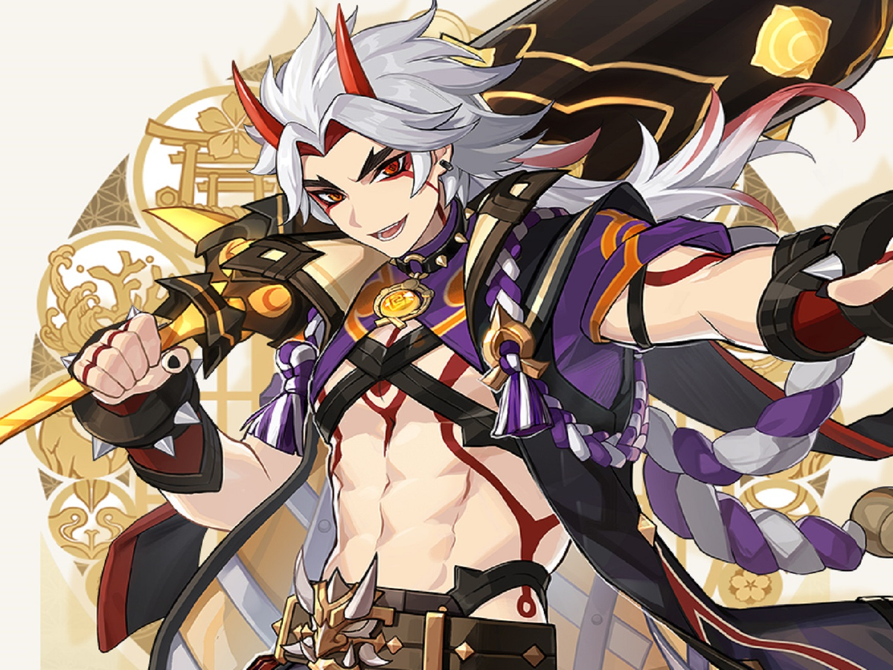
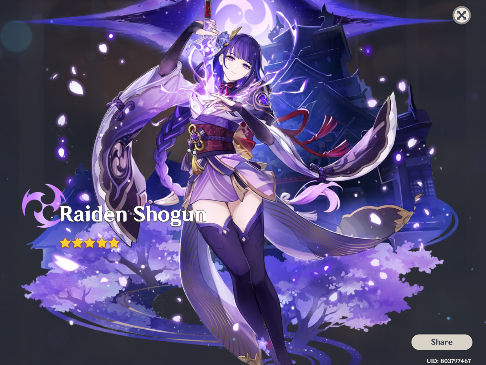
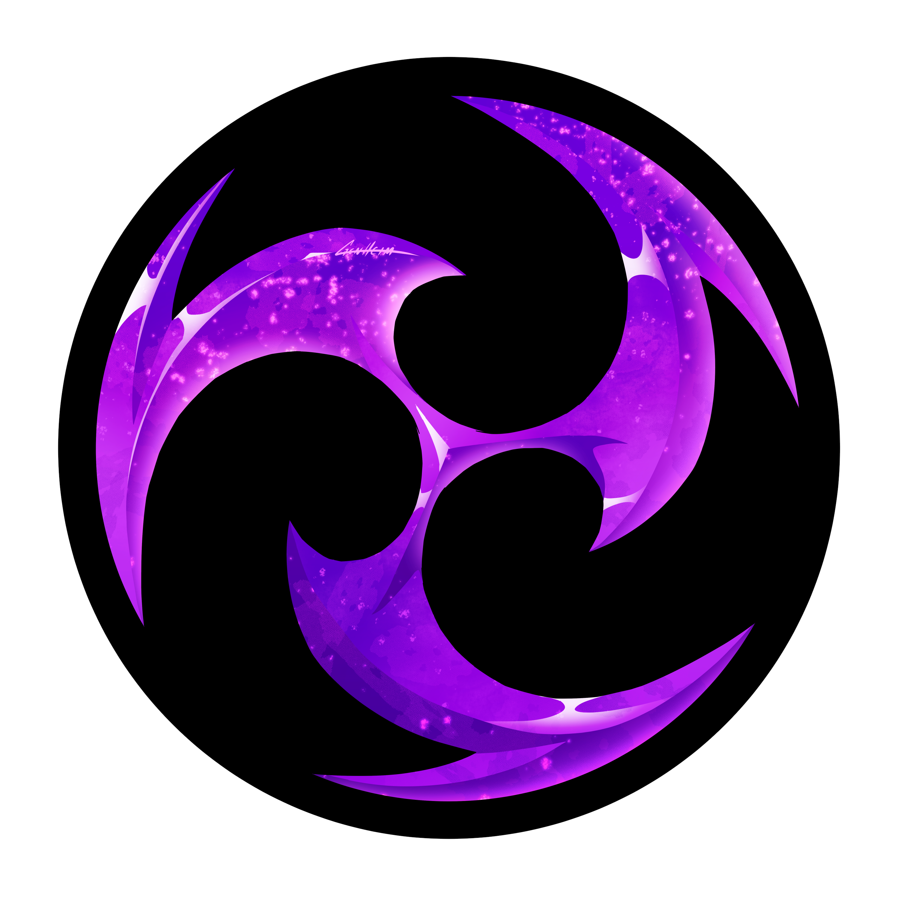
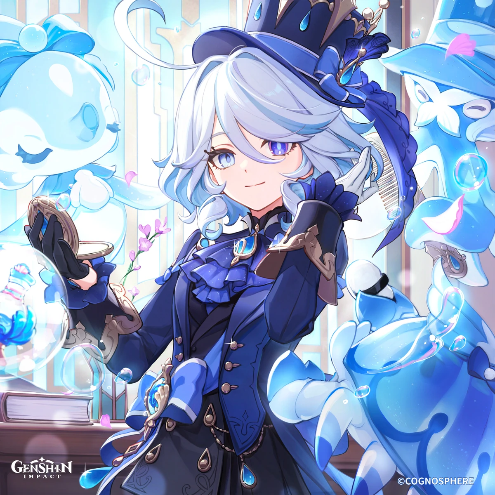
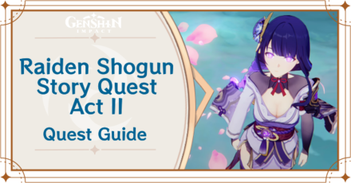
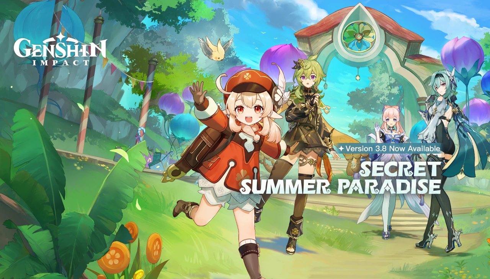
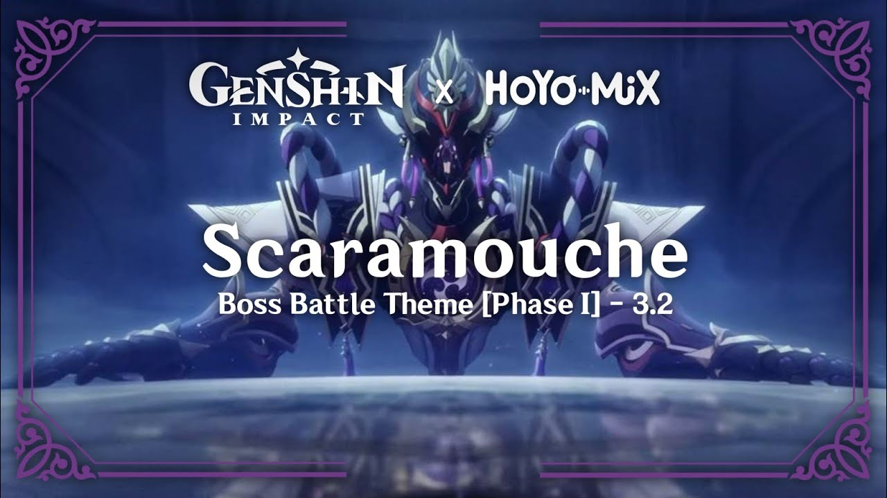

My Genshin
Favorite Genshin Character

Least Favorite Genshin Character

Favorite Genshin Fatui

Favorite Genshin Archon

Favorite Genshin Nation

Favorite Genshin Element

Who I'm Saving For

Favorite Genshin Story Quest

When I Joined Genshin

Favorite Genshin Soundtrack
